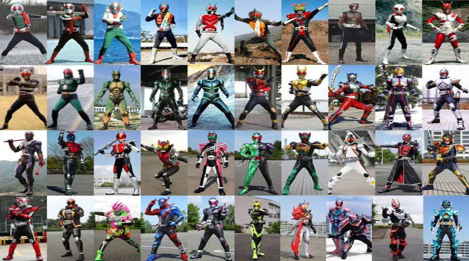
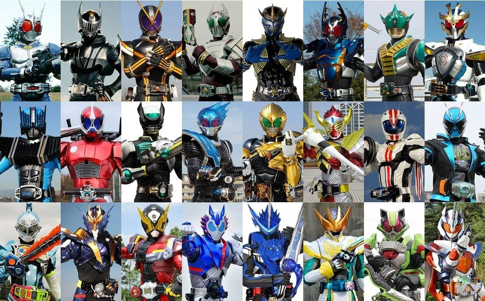
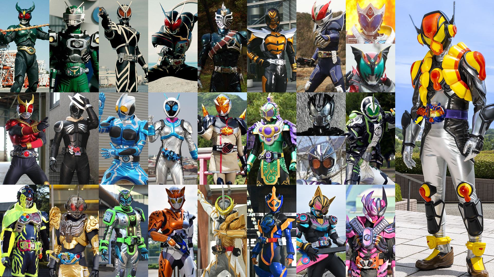
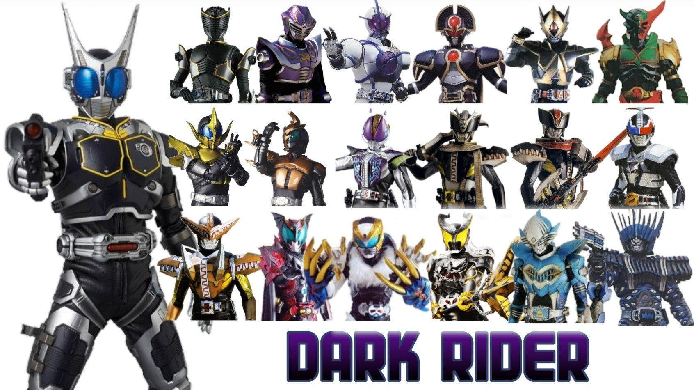

Primarios

Os Cavaleiros Principais (主役ライダー, Shuyaku Raidā, lit. Cavaleiros Principais) são os protagonistas homônimos de suas séries, filmes e especiais. A maioria deles conta para a lista dos principais Kamen Riders que a Toei reconhece.
Secundarios

Os Cavaleiros Secundários (2号ライダー, Ni-gō Raidā), também conhecidos como Segundos Kamen Riders (2º 仮面ライダー, Sekando Kamen Raidā), são um subconjunto dos Cavaleiros de Apoio que recebem o segundo posto em cada edição da Série Kamen Rider.
É importante esclarecer que o Cavaleiro Secundário não é necessariamente o segundo Rider estreante nem ocupa o segundo papel mais significativo na história da série. Durante a produção, os Cavaleiros Secundários são identificados como tendo o segundo maior foco no marketing de brinquedos e produtos, vindo depois do Cavaleiro Primário.
Terciarios

Cavaleiros Terciários (3号ライダー, San-gō Raidā) são um subconjunto dos Cavaleiros de Apoio que recebem o terceiro crédito em cada edição da Série Kamen Rider.
Dark Riders

Cavaleiros Sombrios (ダークライダー, Dāku Raidā), às vezes também chamados de Cavaleiros das Trevas (闇のライダー, Yami no Raidā), são Cavaleiros Kamen malignos. Esses Cavaleiros geralmente são rivais dos Cavaleiros principais. Muitos deles são versões malignas de outros Riders. A maioria dos Cavaleiros Sombrios aparece apenas em filmes ou especiais, embora alguns também tenham feito aparições regulares em séries de TV.